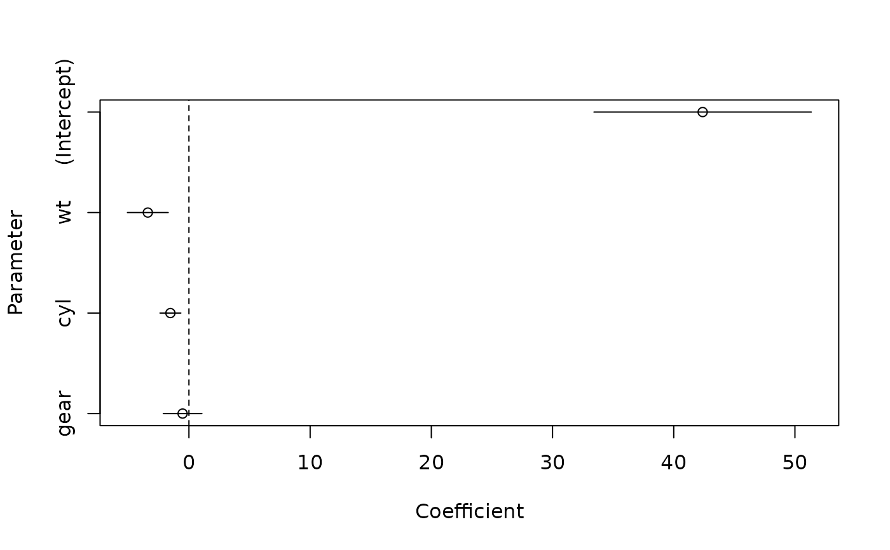
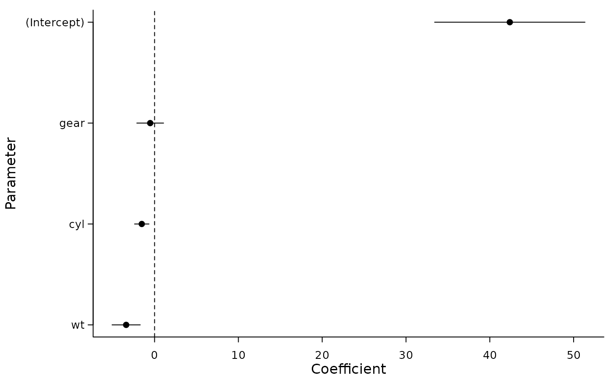
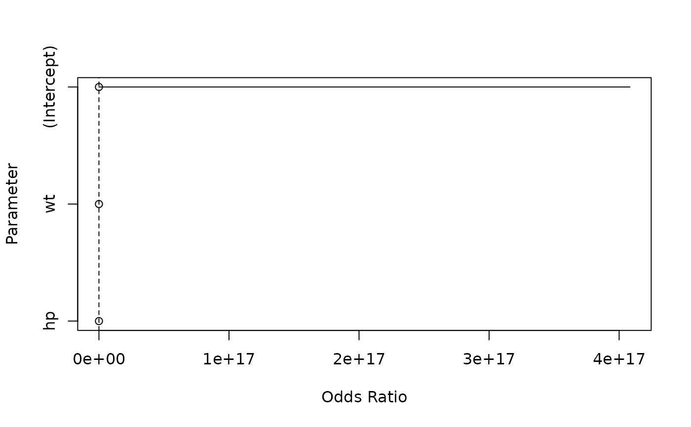

Draws a forest plot (coefficients as points, confidence
intervals as ranges) from a parameters_model object, using the
lightweight base-graphics package tinyplot instead of ggplot2. The
method is registered for tinyplot::tinyplot() and its shorthand alias
tinyplot::plt().
Usage
# S3 method for class 'parameters_model'
tinyplot(
x,
flip = TRUE,
zero = TRUE,
sort = FALSE,
size_title = NULL,
size_axis_title = NULL,
size_axis_text = NULL,
size_point = NULL,
size_line = NULL,
...
)Arguments
- x
An object returned by
model_parameters().- flip
Logical, if
TRUE(default), coefficients are plotted horizontally, with parameter names on the vertical axis.- zero
Logical, if
TRUE(default), a dashed reference line is drawn at zero (resp. at one for exponentiated coefficients), and the estimate axis is extended to include that value.- sort
Logical, if
TRUE, coefficients are sorted by size, largest on top. IfFALSE(default), parameters appear in model order.- size_title, size_axis_title, size_axis_text
Numeric, set the size of plot title, axis title or axis labels. If not
NULL,par()is called temporarily to setcex.main,cex.axisandcex.lab. The original values are restored afterwards. The default size is1. Larger values increase text sizes and vice versa.- size_point, size_line
Size of points and lines in the plot. Default is
1. Larger values increase point/line sizes and vice versa. If argumentcexis used,size_pointwill be ignored. Same for argumentlwd, which overridessize_line.- ...
Other arguments passed to
tinyplot::tinyplot(), e.g.themeorpalette. User-suppliedxlim,ylimorylaboverride the defaults set by this method. Thetype,data,yminandymaxarguments are fixed by this method and will be ignored.
Details
Random effects parameters are dropped from the plot, and for models with a zero-inflation component, only the conditional (count) component is shown. A message is printed in these cases.
This method requires tinyplot version 0.7.0 or later, which supports extending axis limits to cover the reference value.
See also
The plot method for parameters_model objects, provided by the
see package, for ggplot2 based plots.
Examples
# \donttest{
library(tinyplot)
data(mtcars)
model <- lm(mpg ~ wt + cyl + gear, data = mtcars)
result <- model_parameters(model)
plt(result)

# sorted by coefficient size, using a theme
plt(result, sort = TRUE, theme = "classic")

# exponentiated coefficients place the reference line at 1
model <- glm(am ~ wt + hp, data = mtcars, family = "binomial")
result <- model_parameters(model, exponentiate = TRUE)
plt(result)

# }